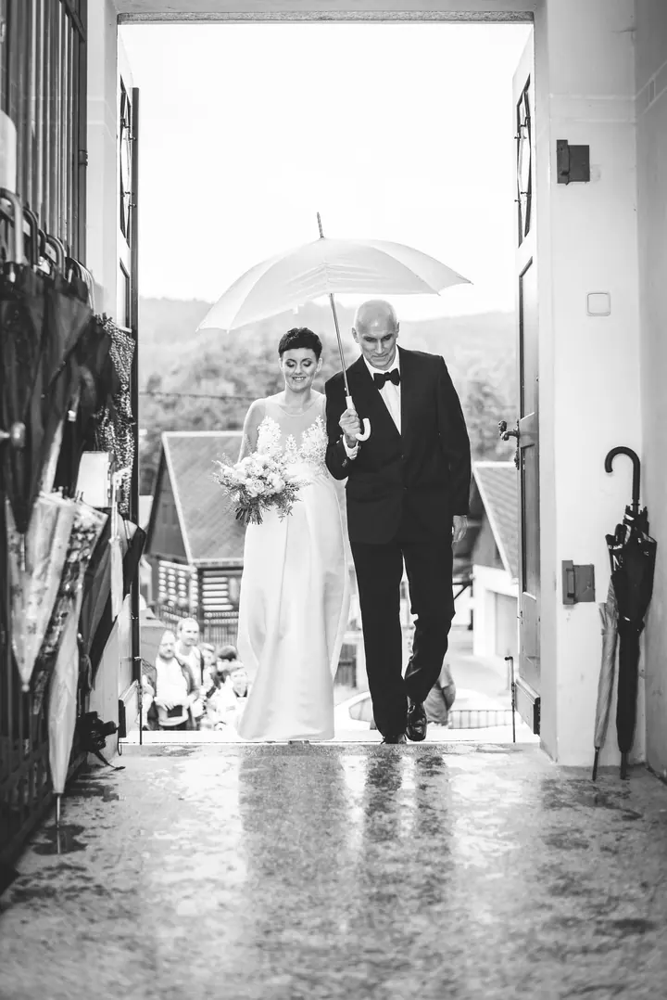
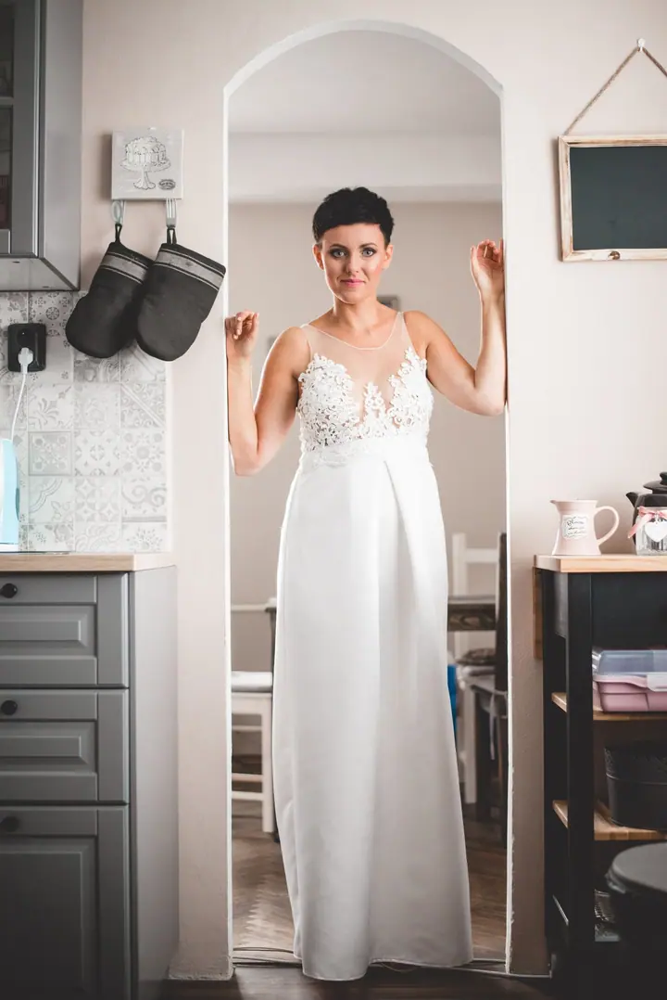
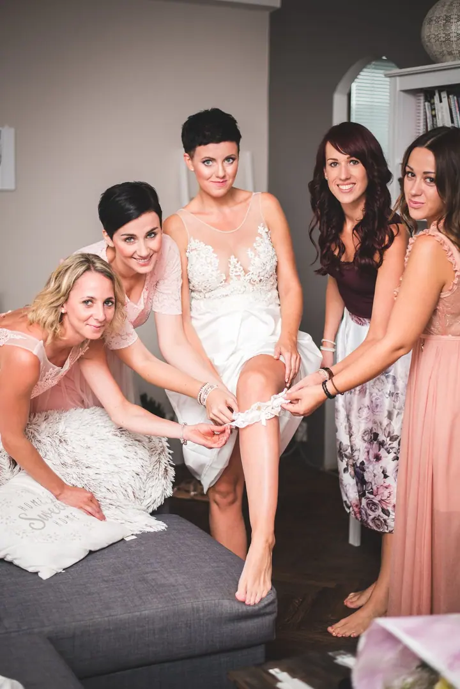
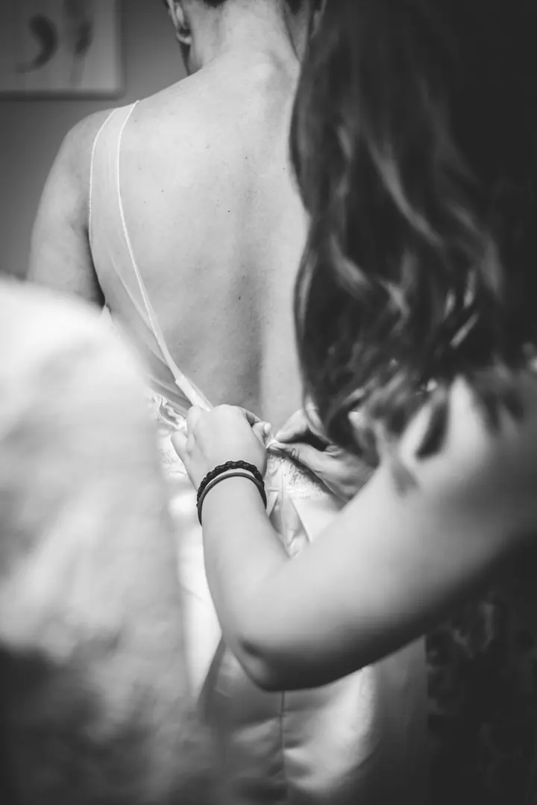

jedna
Svatební fotografie
Váš den zachytíme jako příběh, od příprav přes obřad až po první tanec. Vybrat si můžete malou intimní svatbu na 6 hodin i celý den se dvěma fotografy.

Svatební a rodinný fotograf · Jablonec nad Nisou, Jizerské hory, Praha

Jmenuji se David Borovička a se svou ženou Gábi fotíme svatby, rodiny a páry. Nejvíc nás baví obyčejné okamžiky: smích, který přijde nečekaně, ruce, co se dotknou, a ticho mezi pohledy. Ateliér máme v centru Jablonce nad Nisou, ale přijedeme za vámi kamkoliv.
Více o mně
Co fotím
jedna
Váš den zachytíme jako příběh, od příprav přes obřad až po první tanec. Vybrat si můžete malou intimní svatbu na 6 hodin i celý den se dvěma fotografy.
dvě
Procházka nebo výlet ve dvou, při kterém se poznáme a připravíme se na svatební den. Je to dobrý způsob, jak zjistit, jestli jsme pro vás ti praví.
tři
Těhotenské bříško, děti, generace pohromadě i mazlíčci. Fotíme přirozeně, bez strojených póz, v přírodě, u vás doma nebo v našem ateliéru.
Portrétové focení v prostorném ateliéru v centru Jablonce s osmi barvami pláten a vintage zdí. Z náhledů si vyberete pět fotografií, které pro vás vyretušujeme.
Prší, nebo svítí sluníčko? Fotíme za každé situace.

Za objektivem
Miluji všechno kolem hudby a filmu. Kromě focení píšu scénáře, režíruji a stojím za kamerou. S Gábi nás spojila láska k umění, deset let jsme manželé a společně fotíme lidi. Svatbami a rodinami jsme kdysi začínali a dodnes nás tohle focení provází celým naším tvůrčím podnikáním.
Na svatbě chceme být nejen fotografy, ale i parťáky a pomocnou rukou. Snažíme se se vším poradit, být všude a přitom nikde nepřekážet. Nafotili jsme už přes 150 svateb, takže víme, co je pro vás důležité. A ať prší, nebo svítí sluníčko, fotíme za každé situace.
Při rodinném focení nikoho nestavíme do nepřirozených póz, ale rádi poradíme. Fotíme v naší české přírodě, v Jizerkách i v Praze, u vás doma, nebo v našem ateliéru v Jablonci, kde máme osm barev pláten, vintage zeď a koutek zařízený jako obývák.
David
Pošlete nám termín a pár slov o tom, jakou svatbu chystáte. Pomůžeme vám vybrat balíček, který vám bude nejlépe sedět.
Probereme spolu průběh dne osobně nebo online. Kdo chce, může si vyzkoušet předsvatební procházku nebo výlet před objektivem.
Jsme s vámi od příprav přes obřad a skupinky až po první tanec. Na svatbu s více než 80 hosty doporučujeme dva fotografy.
Všechny povedené fotky upravíme, v mixu barevných a černobílých. Dostanete je do 2 až 3 měsíců i s tištěnými fotografiemi a online galerií pro rodinu a přátele.
Portfolio
Otázky
Intimní balíček do 6 hodin stojí 29 000 Kč, klasický celodenní 36 000 Kč a nekompromisní balíček se dvěma fotografy a možností dronu 48 000 Kč.
Prší, svítí sluníčko, nebo je živelná pohroma? Fotíme za každé situace a často z toho vzniknou ty nejhezčí snímky.
Svatební fotky dodáváme standardně do 2 až 3 měsíců, protože si na úpravě dáváme záležet. Fotky z rodinného focení máte do 8 týdnů.
Neupravené fotografie neodevzdáváme. Dostanete ale všechny povedené snímky, a to upravené.
Za rezervaci fakturujeme polovinu ceny předem a tato platba je nevratná. Při větší vzdálenosti je potřeba zajistit nám na svatbě ubytování.
Napište pár vět o tom, co si představujete. · +420 775 720 202